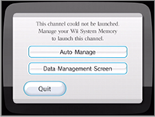

Troubleshooting the Error Message "This channel could not be launched"
The error message above means there is not enough free space in Wii system memory. Follow the instructions on the screen to manage your save data.
- The SD Card Menu uses Wii system memory in order to launch channels.

● Auto Manage
This lets you choose among four options that allow you to manage data automatically.
● Data Management Screen
This lets you manage the data by
yourself (→).

 ).
).